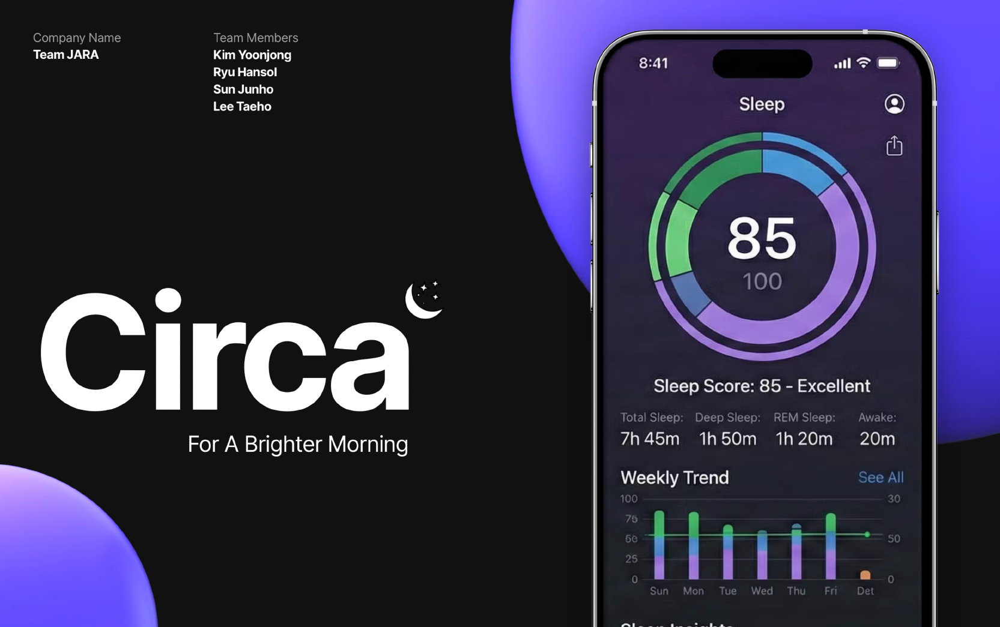
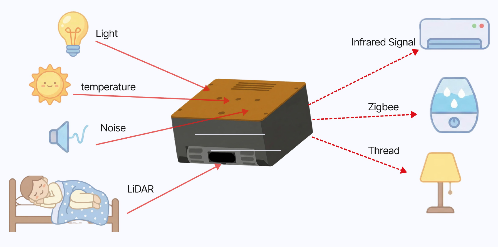
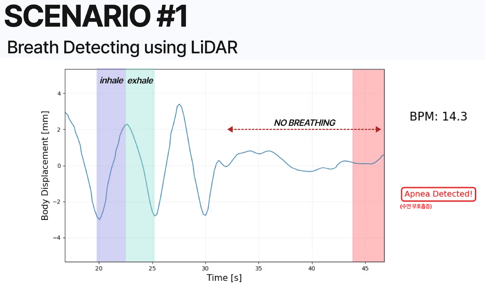
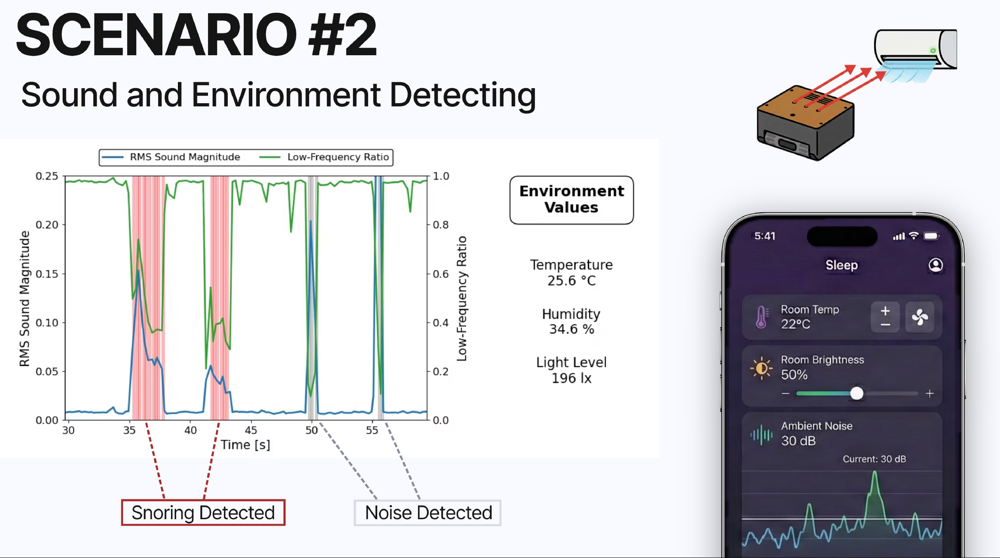

Mechatronics · Embedded Sensing · IoT
Circa
Contactless sleep monitoring and an environment-adaptive bedside IoT hub
1st Place · SNU Mechatronics Design Competition

Overview
Circa is a bedside mechatronics system designed to monitor sleep without requiring wearable sensors while also sensing and controlling the surrounding sleep environment.
The system combines ToF-based sleep sensing, acoustic and environmental monitoring, and IoT-based room interaction in a single integrated platform.
My Role
I led the LiDAR/ToF sensing component of the project, from raw 8 × 8 ToF measurements to sleep-related signal extraction. My work included temporal filtering and signal processing for respiration sensing, breathing-rate estimation, body-motion analysis, and apnea-event detection.
System Overview

Circa integrates LiDAR, sound, and environmental sensing with multiple room-control interfaces such as infrared, Zigbee, and Thread-enabled devices.
LiDAR / ToF Sleep Sensing

Example of respiration sensing and apnea-event detection using distance variations measured by the ToF LiDAR sensor.
The primary sensing modality is an 8 × 8 ToF LiDAR array positioned near the bed. Small changes in measured distance capture periodic chest motion from respiration, while larger changes indicate body movement.
Using temporal filtering and signal processing, the system estimates breathing rate and monitors the disappearance of respiratory oscillations to detect apnea-like abnormal events.
Sound and Environmental Awareness

Acoustic and environmental sensing support context awareness, including snoring/noise detection and room-condition monitoring.
In addition to sleep sensing, Circa monitors the surrounding environment using sound, temperature, humidity, and light measurements. These signals help characterize sleep-related disturbances and ambient room conditions.
The system also connects this environmental awareness to bedside IoT interaction, enabling a single platform for sensing, monitoring, and control.
Outcome
Circa brought together embedded sensing, signal processing, simple machine intelligence, and IoT-based room interaction into a single working system.
The project was awarded 1st Place in the SNU Mechatronics Design Competition.